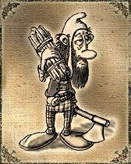
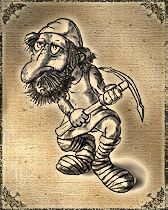
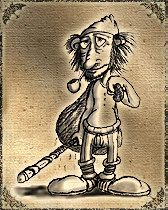
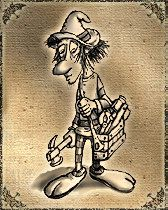
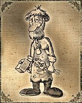

Clases trabajadoras del Juego
No todos los héroes empuñan espadas ni lanzan hechizos. Detrás de cada guerrero victorioso y cada arma legendaria, hay manos que trabajan el hierro, tallan la madera y dominan los secretos de la tierra y el mar. Estas son las Clases Trabajadoras, el corazón invisible del continente:
- Una de hierro, entre Ullathorpe y Nix.
- Una de hierro y plata, cercana al Bosque Dorck.
- Una de oro, dentro de un peligroso Dungeon.
- Ser pescador
- Usar galera (necesita 65 skills en navegación)
- 100 skills en pesca
- Si tienes 15 skills en inteligencia necesitas 35 en magia
- Si tienes 16 skills en inteligencia necesitas 33 en magia
- Si tienes 17 skills en inteligencia necesitas 31 en magia
- Si tienes 18 skills en inteligencia necesitas 30 en magia
- Si tienes 19 skills en inteligencia necesitas 28 en magia
- Si tienes 20 skills en inteligencia necesitas 27 en magia
- Si tienes 21 skills en inteligencia necesitas 25 en magia
- Niveles 1 a 5 -> Un ítem a la vez.
- Niveles 6 a 14 -> Dos ítems a la vez.
- Niveles 15 a 23 -> Tres ítems a la vez.
- Niveles 24+ -> Cuatro ítems a la vez.
- Niveles 1 a 5 -> Un ítem a la vez.
- Niveles 6 a 14 -> Dos ítems a la vez.
- Niveles 15 a 23 -> Tres ítems a la vez.
- Niveles 24+ -> Cuatro ítems a la vez.
Talador:
El oficio de la tala consiste en la utilización del hacha para conseguir leña de los árboles. Con esta leña pueden fabricarse variados objetos de carpintería. Hay dos tipos de leña, la común y la de tejo: La leña común se consigue en casi todos los árboles de Argentum, incluso en los de las ciudades. Cualquier clase social puede talar estos árboles. Para conseguir esta madera necesitarás un hacha de leñador. La leña de tejo, en cambio, solo puede conseguirse en una isla del Bosque Místico. Para talarla debes ser leñador y tener un hacha dorada. Esta leña es utilizada para la creación de objetos muy caros que solo algunas clases pueden usar.
Debes tener en cuenta que un personaje de clase social “Leñador” obtendrá de 1 a 3 leños por vez, mientras que las demás clases solo obtienen de a uno. Mientras más skills tengas en talar árboles, más chance tendrás de conseguir la leña.

Minero:
La minería se separa en dos trabajos: la extracción de minerales y la creación de lingotes con estos minerales. En Argentum hay tres minas:
Estos minerales son muy valiosos y es difícil conseguirlos ya que mucha gente los desea. Con estos minerales pueden fabricarse lingotes con los que se hacen armas, armaduras, cascos, escudos, etc.
Para extraer minerales debes tener un piquete de minero. El hierro y la plata pueden ser extraídos por cualquier clase social, pero el oro solo puede extraerse con un minero que esté equipado con un piquete de oro.
Debes tener en cuenta que un personaje de clase social “Minero” obtendrá de 1 a 4 minerales por vez, mientras que las demás clases solo obtienen de a uno. Mientras más skills tengas en minería, más rápido extraerás los minerales.

Pescador:
El oficio de la pesca consiste en la utilización de la caña de pescar o la red de pesca. Con esos objetos podrás conseguir distintos tipos de peces, los cuales puedes vender o usar para comer.
Una caña de pescar cuesta tan solo 2000 monedas de oro y cualquier personaje puede usarla. En AOForever existe otro ítem que se utiliza para pescar mucho más rápidamente que con una caña: la red de pesca. El valor de la red es de 4.800.000 monedas de oro (teniendo 100 skillpoints en comercio el precio baja a 2.400.000)
Estas son las condiciones para usar red de pesca:

Carpintero:
El oficio de la carpintería se basa en la creación de elementos a base de madera. Esta puede ser leña común o de tejo. Para poder crear estos elementos necesitarás un serrucho, grandes cantidades de madera y por último contar con la cantidad de skills necesaria para fabricar lo que desees.
Para trabajar objetos con madera de tejo se necesitan skills en magia. Aquí hay una tabla que indica los skills necesarios:
Dependiendo del nivel de tu personaje, creará ítems más rápido o más lento.

Herrero:
El oficio de la herrería se basa en la fabricación de armas, escudos, cascos, herramientas, anillos y armaduras. Para poder crear estos objetos debes tener un martillo de herrero además de los lingotes necesarios.
Dependiendo del nivel de tu personaje, creará ítems más rápido o más lento.
Solo los herreros pueden fabricar objetos de herrería.
